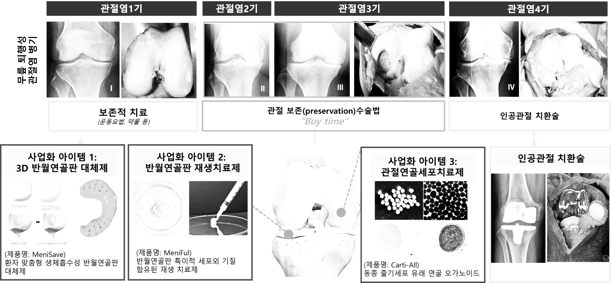

A regenerative medicine company built from the operating room outward.수술실에서 출발해 설계된 재생의학 기업.
ArthRegen was founded in 2025 as a spin-out from Samsung Medical Center's Department of Orthopedic Surgery. The science is rigorous because the surgical reality demanded it: surgeons, scientists, and engineers, working as one team, on one regenerative platform. 아스리젠은 2025년 삼성서울병원 정형외과에서 스핀오프하여 설립되었습니다. 수술 현장의 요구가 과학을 정교하게 만들었고, 외과의·과학자·엔지니어가 하나의 재생의학 플랫폼으로 한 팀을 이루고 있습니다.
A surgeon's letter.외과의의 인사말.
From Joon Ho Wang, MD/PhD — surgeon and founder of ArthRegen. 아스리젠의 정형외과 의사이자, 창업자 왕준호 (MD/PhD)

Hello — I'm Joon Ho Wang, CEO of ArthRegen Co., Ltd.
ArthRegen was founded to materially improve the lives of patients living with joint pain, by combining regenerative-medicine biology with AI-driven 3D printing.
As an orthopedic surgeon specializing in joint disease, I've spent years caring for patients with cartilage and meniscus damage and chronic pain. In the operating room I felt — every day — the absence of a true regenerative option. I kept the research alive, but found that academic results rarely reach the patients who actually need them. ArthRegen exists to close that gap.
Our goal is practical: provide evidence-based, scientifically rigorous solutions that help more people regain healthy knees and reclaim the freedom of daily life.
We will continue to set a new standard in joint regeneration through patient-centered research and clinically grounded technology development. We appreciate your continued attention and support.
Thank you.
안녕하십니까.
아스리젠㈜ 대표이사 왕준호입니다.
아스리젠은 재생의학 기반 바이오 기술과 AI 기반 3D 프린팅 기술을 융합하여, 관절 통증으로 고통받는 환자들의 삶의 질을 실질적으로 향상시키고자 설립된 기업입니다.
저는 관절을 전공한 정형외과 의사로서, 오랜 기간 관절 손상과 만성 통증에 시달리는 환자들을 직접 진료해 왔습니다. 임상 현장에서 근본적인 관절 재생 치료의 필요성을 절감하며 관련 연구를 지속해왔지만 학술적 성과가 실제 치료 현장으로 이어지지 못하는 한계를 경험했습니다. 이러한 연구 결과를 실제 의료 현장에서 구현하여 환자들의 삶을 변화시키고자 아스리젠을 창업하게 되었습니다.
아스리젠은 과학적 근거에 기반한 혁신적 기술을 통해 더 많은 사람들이 건강한 무릎을 되찾고, 일상의 자유를 누릴 수 있도록 실질적인 솔루션을 제공하는 것을 목표로 하고 있습니다.
앞으로도 환자 중심의 연구와 임상적 근거에 기반한 기술 개발을 통해 관절 재생 치료의 새로운 기준을 만들어가겠습니다. 지속적인 관심과 성원을 부탁드립니다.
감사합니다.
Healing motion, restoring moments.움직임을 치유하고, 순간을 되찾다.
Arthritis doesn't only limit mobility — it removes the small, daily moments that make a life rich. Walking to meet a friend. Climbing stairs without thinking. Lifting a grandchild. Our work is to return those moments. 관절염은 단지 움직임을 제한하는 것이 아니라, 삶을 풍요롭게 하는 소소한 일상의 순간들을 앗아갑니다. 친구를 만나러 걷는 길, 아무 생각 없이 오르는 계단, 손주와 뛰놀던 순간 — 우리가 되찾아 드리려는 것이 바로 그 순간들입니다.
A future where damaged joints are regenerated, not replaced.손상된 관절을 대체가 아닌 재생으로 회복하는 미래.
Our long-term goal is a fully regenerative bio-native joint — damaged tissue restored to its pre-injury state, not replaced with metal. The pipeline today is step one on that roadmap. 장기 목표는 금속 인공관절로의 치환이 아닌, 손상 전 상태로 되돌리는 바이오 인공관절입니다. 현재의 파이프라인은 그 여정의 첫 번째 단계입니다.

At a glance회사 개요
Corporate profile회사 정보
Core business주요 사업
Surgeon-scientists and engineers.외과의, 과학자, 엔지니어.
Twenty-plus years of orthopedic surgery, paired with deep specialization in stem-cell therapy, decellularization, 3D printing, and AI-driven design. 20년 이상의 정형외과 수술 경험과 줄기세포 치료, 탈세포화, 3D 프린팅, AI 설계 등 전문 분야가 한 팀으로 모였습니다.
- Chair, Dept. of Orthopedic Surgery, Samsung Medical Center삼성서울병원 정형외과 과장
- Chair Professor, SKKU School of Medicine성균관대학교 의과대학 정형외과 주임교수
- PhD in Medicine, Korea University고려대학교 의학박사
- 13,000+ knee surgeries · 174+ papers · 20+ clinical trials무릎 수술 13,000건 이상 · 논문 174편 · 임상시험 20건 이상
- Postdoctoral Fellow, Samsung Medical Center삼성서울병원 박사후연구원
- PhD, Life Sciences, Seoul National University서울대학교 생명과학 박사
- Specialty: decellularization, stem-cell organoids, regenerative therapeutics전문분야: 탈세포화, 줄기세포·오가노이드, 재생 치료제
- PhD, Life Sciences, Seoul National University서울대학교 생명과학 박사
- Specialty: cartilage & meniscus regeneration, musculoskeletal aging전문분야: 관절연골·반월연골판 재생, 근골격 노화
- PhD, Mechanical Engineering, Kyungpook National University경북대학교 기계공학 박사
- Specialty: 3D printing, biomaterials전문분야: 3D 프린팅, 생체재료
- MS, Life Sciences, Suwon University수원대학교 생명과학 석사
- Specialty: stem-cell organoids, cell therapeutics, natural-compound screening전문분야: 줄기세포·오가노이드, 세포치료제, 천연물 스크리닝
Clinical & scientific advisors.임상·과학 자문위원.
Leading orthopedic surgeons and engineers from Korea's top institutions advise on clinical design, biomechanics, and AI-driven imaging. 국내 최고 기관의 정형외과 전문의와 공학자들이 임상 설계, 생체역학, AI 기반 영상 분석을 자문합니다.
Scientific Advisors과학 자문위원
Prof. Byoung-Soo Kim김병수 교수
Pusan National University — 3D bioprinting, tissue engineering, bioreactors부산대학교 — 3D 바이오프린팅, 조직공학, 바이오리액터
Prof. Helen Hong홍헬렌 교수
Seoul Women's University — deep-learning automated segmentation and image analysis서울여자대학교 — AI 딥러닝 기반 자동 분할 및 영상 분석
Prof. Seungbum Koo구승범 교수
KAIST — Musculoskeletal biomechanics, 2D–3D registrationKAIST — 근골격 운동 역학, 2D–3D 정합 기술
Clinical Advisors임상 자문위원
Seonghwan Kim, MD/PhD김성환 (MD/PhD)
Severance Hospital, Dept. of Orthopedic Surgery세브란스병원 정형외과
Jongmin Kim, MD/PhD김종민 (MD/PhD)
Asan Medical Center, Seoul서울아산병원 정형외과
Hyuksoo Han, MD/PhD한혁수 (MD/PhD)
Severance Hospital, Dept. of Orthopedic Surgery세브란스병원 정형외과
Kimo Jang, MD/PhD장기모 (MD/PhD)
Korea University Anam Hospital고려대학교 안암병원 정형외과
Yong In, MD/PhD인용 (MD/PhD)
Seoul St. Mary's Hospital서울성모병원 정형외과
Daehee Lee, MD/PhD이대희 (MD/PhD)
Samsung Medical Center삼성서울병원 정형외과
A network across development, manufacturing, and clinic.개발·제조·임상을 아우르는 협업 네트워크.
Strategic partners across joint hospital networks, CMC/CDMO/GMP manufacturing, and academic research collaborators. 관절 전문 병원 네트워크, CMC/CDMO/GMP 제조 파트너, 학술 협력 기관에 이르는 전략적 파트너쉽.
Joint specialty hospitals관절 전문 병원
LOI-backed early-adopter hospitals and clinical feedback partners.구매의향서 기반 초기 채택 병원 및 임상 피드백 파트너.
- Yonsei Sarang Hospital연세사랑병원
- Bareunsesang Hospital바른세상병원
- SNU Seoul HospitalSNU서울병원
- Seoul Bareunsesang Hospital서울바른세상병원
- Ansan Ace Hospital안산에이스병원
- Heungkae Hospital흥케이병원
Manufacturing & preclinical제조·비임상
CMC process, GLP preclinical, and GMP cell-therapy contract development & manufacturing partners.CMC 공정, GLP 비임상, GMP 세포치료제 위탁 개발·생산 파트너.
- HLB BiocodeHLB바이오코드
- Biotoxtech
- Matica Biolabs마티카바이오랩스
Process & platform development공정·플랫폼 개발
Co-development on AI customization, 3D printing, decellularization, and imaging.AI 맞춤·3D 프린팅·탈세포화·영상 분석 공동 개발 파트너.
- T&R Biofab
- ORTHOTECH
- Seoul Women's University서울여자대학교
- Pusan National University부산대학교
From spin-out to scale.스핀오프에서 스케일업까지.
A staged plan moving from foundational technology acquisition through commercialization to global expansion. 원천기술 확보 → 사업 기반 구축 → 상용화 → 글로벌 확장으로 이어지는 단계별 로드맵.
National R&D grant execution, foundational technology acquisition, business plan development, and partnership formation.국가 과제 진행, 원천 기술 확보, 사업 계획 구체화, 협력 기관 확보.
Technology maturation · 2 patent applications · Start-up NEST 18th cohort (KODIT) · SKKU SVC Forum · corporate R&D center established.원천 기술 고도화 · 특허 출원 2건 · 신용보증기금 Start-up NEST 18기 선정 · 성균관대 SVC 포럼 선정 · 기업부설연구소 설립.
Seed + TIPS R&D + Pre-Series A funding · GLP preclinical for Carti-All · MeniFul market launch · medical-device GMP buildout.Seed·TIPS R&D·Pre-Series A 조달 · Carti-All GLP 비임상 · MeniFul 출시 · 의료기기 GMP 설립.
Series A · MeniSave entering clinical trials · Carti-All advancing to Phase 2b/3 · first commercial revenue recognized.Series A · MeniSave 임상 진입 · Carti-All 임상 2b/3상 · 첫 매출 발생.
Strategic investment · IPO preparation · international partnerships · MeniSave commercial launch · Carti-All conditional approval & sales · full-scale GMP buildout.SI 투자 · IPO 준비 · 해외 파트너쉽 체결 · MeniSave 허가·판매 개시 · Carti-All 조건부 판매 · GMP 생산설비 구축.